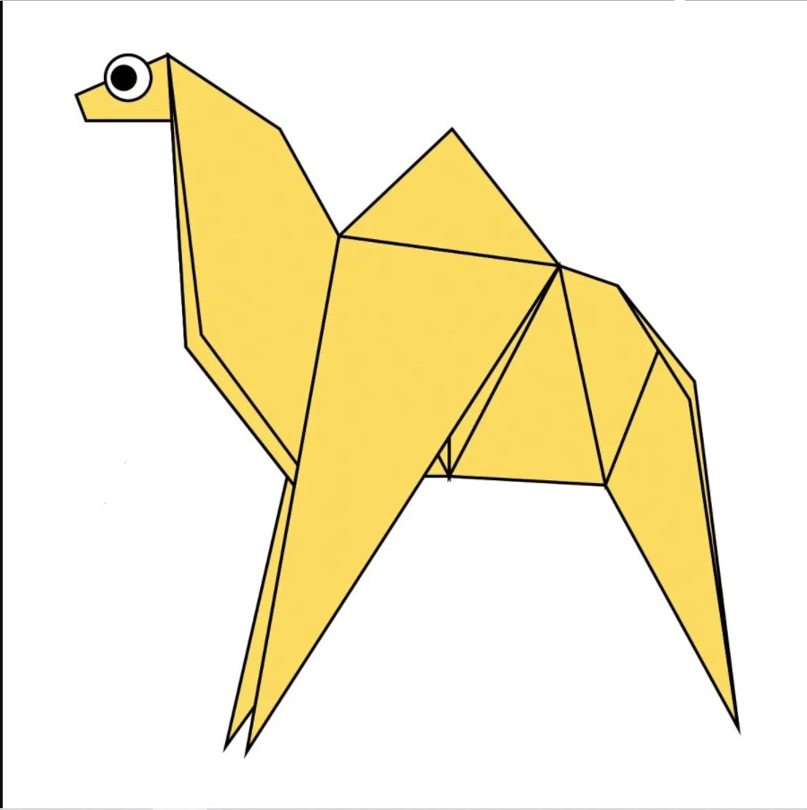
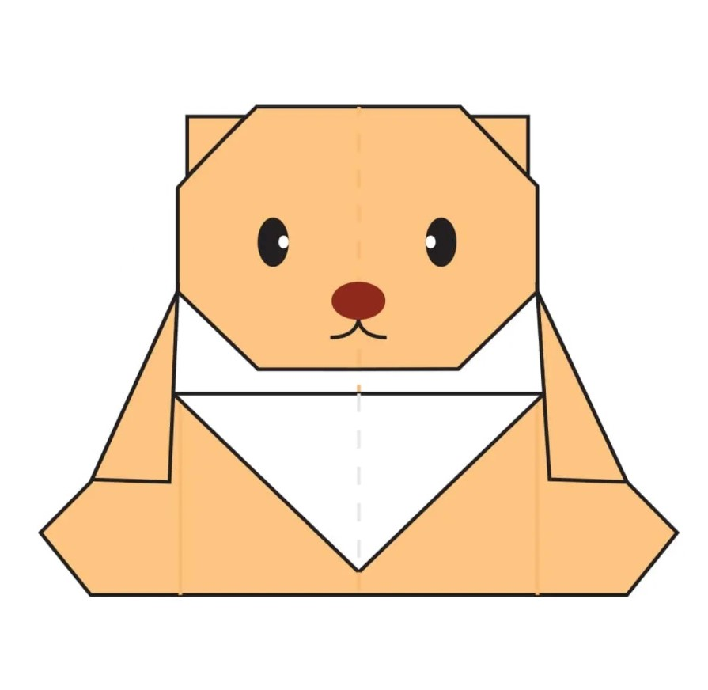
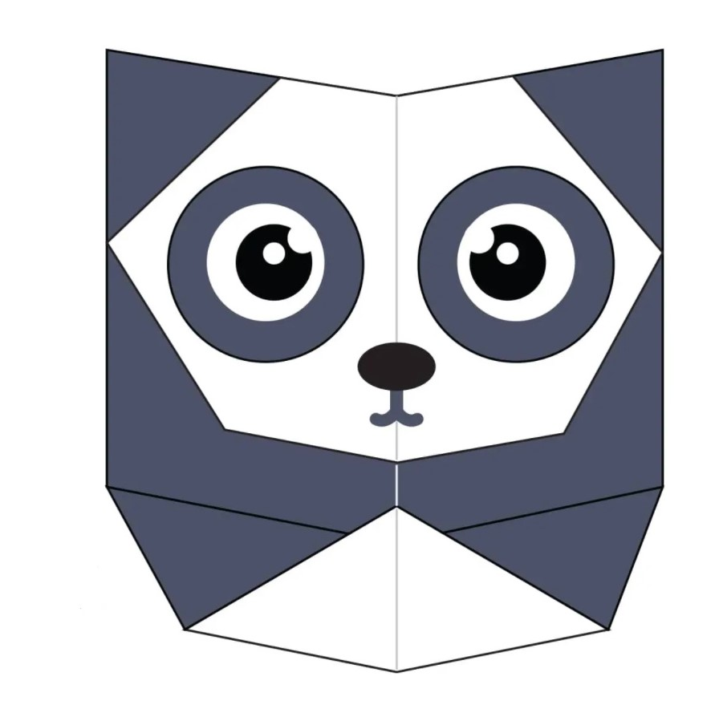

Interesting facts about camels
- Camels have three sets of eyelids and two rows of eyelashes to keep sand out of their eyes.
- Camels have thick lips which let them forage for thorny plants other animals can't eat.
- Camels can survive up to 15 days without water.

Interesting facts about chameleons
- Chameleons have eyes in the backs of their heads
- Chameleons come in a lot of different shapes and sizes
- Chamelions are part of Iguana Families

Interesting facts about pigeons
- Pigeons have fought alongside humans in World War I and II
- Pigeons can fly at altitudes up to and beyond 6000 feet
- Pigeons have exellent hearing abilities.

Interesting facts about bears
- Black bears can run at the speed up to 35mph.
- The Asiatic black bear has the largest ears than other species of bears
- They can swim constantly for days at a time

Interesting facts about Pandas
- An adult Panda can eat 12–38 kilos of bamboo per day!
- They have great camouflage for their environment.
- Their eyes are different to normal bears.

Interesting facts about flying-cicadas!
- Cicadas can't eat, they get nutrients from tree root.
- Cicadas can't eat or even bite, because they lack jaws.
- Cicadas have two compound eyes and three ocelli, which are believed to detect light and darkness.